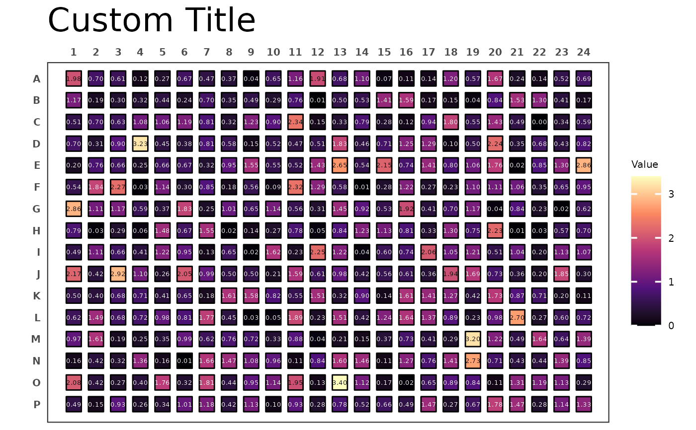
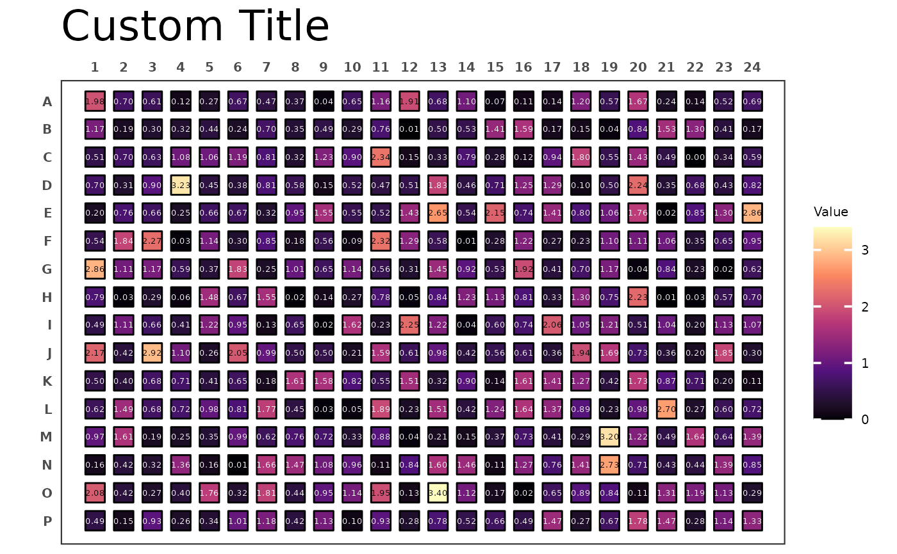
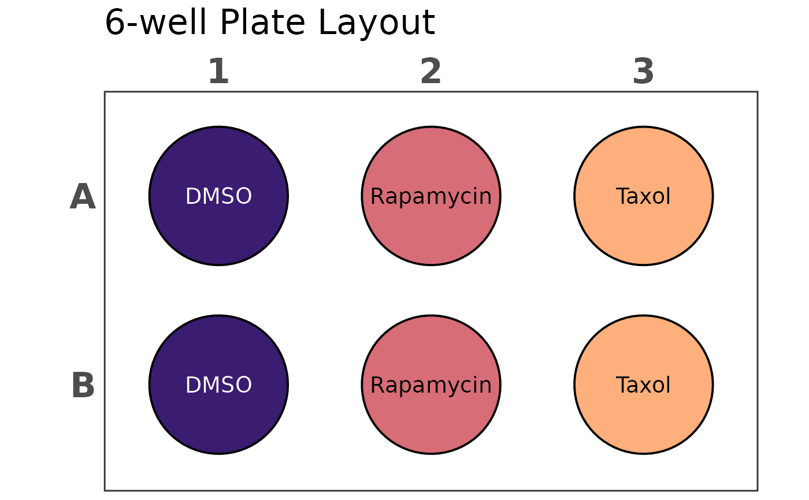
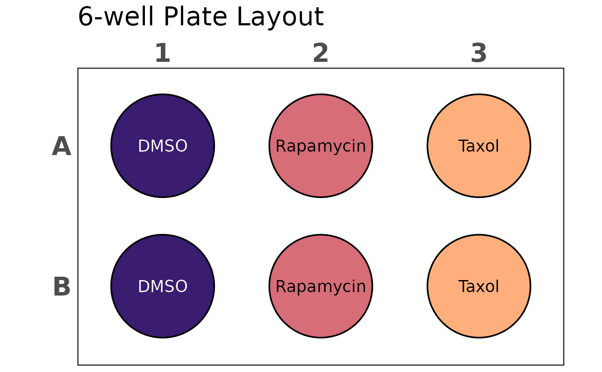

Plots a culture plate or microplate in the desired format. Both continuous as well as discrete values can be displayed with colours and labels.
Usage
plate_plot(
data,
position,
value,
label,
plate_size = 96,
plate_type = "square",
colour,
remove_na = TRUE,
na_fill = "grey50",
limits,
title,
title_size,
show_legend = TRUE,
legend_n_row,
label_size,
silent = TRUE,
scale
)Arguments
- data
a data frame that contains at least a column with plate position information and a column with values or labels.
- position
a character column in the
datadata frame that contains plate positions. These should be in the format: row = letter, column = number. So for example A1, D12 etc.- value
a character or numeric column in the
datadata frame that contains values that should be plotted as colours on the plate layout. Can be the same column aslabel.- label
a character or numeric column in the
datadata frame that contains values that should be plotted as labels on the plate layout. Can be the same column asvalue.- plate_size
a numeric value that specifies the plate size (number of wells) used for the plot. Possible values are: 6, 12, 24, 48, 96, 384 and 1536.
- plate_type
a character value that specifies the well type. Possible values are "round" and "square". The default is "square".
- colour
optional, a character vector that contains colours used for the plot. If the
valueargument is discrete the colours are used as provided. If it is continuous a gradient is created using the colours.- remove_na
a logical value specifying whether rows with missing values (
NA) in thevaluecolumn are removed from the input data. This will not remove anyNAvalues created due to values outside of thelimits. Default isTRUE.- na_fill
optional, a character value specifying the fill colour used for wells with missing values (
NA) and, for continuous data, for values outside the range defined bylimits. The default is"grey50".- limits
optional, a numeric vector of length two providing new limits for a colour gradient. Use NA to refer to the existing minimum or maximum. If this argument is not supplied the existing minimum and maximum of the values provided to the
valueargument are used for the start and end point of the colour gradient.- title
optional, a character value that contains the plot title.
- title_size
optional, a numeric value that determines the text size of the title. The size is also affected by the
scaleargument.- show_legend
a logical value that specifies if the plot legend is shown. Default is
TRUE.- legend_n_row
optional, a numeric value that specifies the number of rows of legends. If no value is provided, the automatic ggplot default is used.
- label_size
optional, a numeric value that determines the text size of the well labels. The size is also affected by the
scaleargument.- silent
a logical value that specifies if the function should report the size of the plotting area and the adjusted scale parameter. Default is
TRUEmeaning it will not return any message. The plot was optimized for a device size of: width = 5.572917 in and height = 3.177083 in, which was determined using the functionpar("fin"). This means if the device has these dimensions the scaling factor is 1.- scale
a numeric value that scales point sizes and labels of the plot. If not provided, the plot uses the device size to find the optimal scaling factor for the output, however, this might be slightly off (e.g. due to number of labels) and can be manually adjusted with this argument.
Examples
library(dplyr)
#>
#> Attaching package: ‘dplyr’
#> The following objects are masked from ‘package:stats’:
#>
#> filter, lag
#> The following objects are masked from ‘package:base’:
#>
#> intersect, setdiff, setequal, union
library(tidyr)
library(stringr)
# Load example data
data("data_continuous_96")
data("data_continuous_384")
data("data_discrete_6")
data("data_discrete_24")
# Create a 96-well plot with round wells
plate_plot(
data = data_continuous_96,
position = well,
value = Value,
label = Value,
plate_size = 96,
plate_type = "round"
)
 # Create a 384-well plot with square wells
# Define a custom lower limit
# Define a custom colour scheme
# Define a custom title with a custom size
plate_plot(
data = data_continuous_384,
position = well,
value = Value,
label = Value,
plate_size = 384,
colour = c("#000004FF", "#51127CFF", "#B63679FF", "#FB8861FF", "#FCFDBFFF"),
limits = c(0, NA),
title = "Custom Title",
title_size = 20
)

# Create a 24-well plot
# Show a 6 row legend
# Scale the plot to 1.2
plate_plot(
data = data_discrete_24,
position = well,
value = Condition,
plate_size = 24,
plate_type = "round",
scale = 1.2,
legend_n_row = 6
)
# Create a 384-well plot with square wells
# Define a custom lower limit
# Define a custom colour scheme
# Define a custom title with a custom size
plate_plot(
data = data_continuous_384,
position = well,
value = Value,
label = Value,
plate_size = 384,
colour = c("#000004FF", "#51127CFF", "#B63679FF", "#FB8861FF", "#FCFDBFFF"),
limits = c(0, NA),
title = "Custom Title",
title_size = 20
)

# Create a 24-well plot
# Show a 6 row legend
# Scale the plot to 1.2
plate_plot(
data = data_discrete_24,
position = well,
value = Condition,
plate_size = 24,
plate_type = "round",
scale = 1.2,
legend_n_row = 6
)
 # Create a 6-well plot
# Define a custom colour scheme
# Adjust label_size to fit text
# Let the plot return width, height and scale
plate_plot(
data = data_discrete_6,
position = well,
value = Condition,
label = Condition,
plate_size = 6,
plate_type = "round",
colour = c("#3a1c71", "#d76d77", "#ffaf7b"),
label_size = 4,
show_legend = FALSE,
silent = FALSE
)
#> width: 6.667 height: 6.667
#> scaling factor: 1.196

# Create a 6-well plot
# Define a custom colour scheme
# Adjust label_size to fit text
# Let the plot return width, height and scale
plate_plot(
data = data_discrete_6,
position = well,
value = Condition,
label = Condition,
plate_size = 6,
plate_type = "round",
colour = c("#3a1c71", "#d76d77", "#ffaf7b"),
label_size = 4,
show_legend = FALSE,
silent = FALSE
)
#> width: 6.667 height: 6.667
#> scaling factor: 1.196
